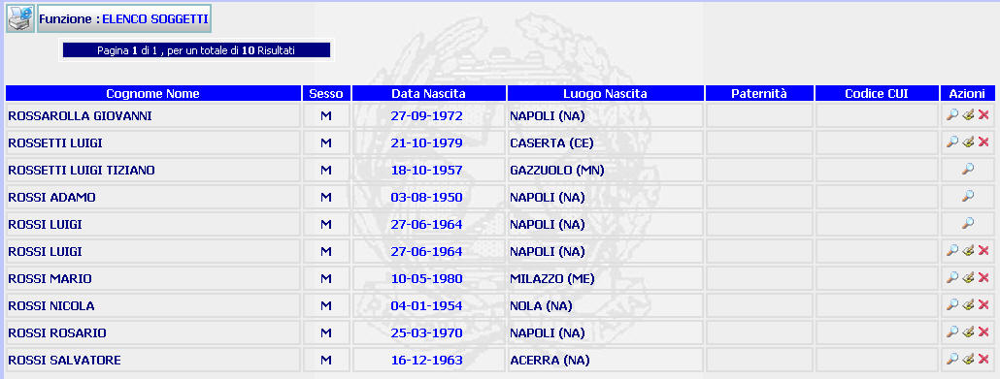

ELENCO SOGGETTI: La funzione consente di visualizzare l'elenco dei soggetti presenti nella banca dati del Distretto di appartenenza
LE MASCHERE VIDEO
La funzione viene realizzata attraverso la maschera seguente in cui compare l'elenco dei soggetti presenti nella banca dati del Distratto di appartenenza

COME FARE PER ...
| Per visualizzare il
dettaglio del soggetto
precedentemente iscritto, l'utente deve selezionare il pulsante
|
| Per modificare i dati del
soggettoprecedentemente iscritto, l'utente deve selezionare il pulsante
|
| Per cancellare un soggetto precedentemente iscritto, l'utente deve selezionare il pulsante
|
CAMPI
La presente funzione non prevede campi da compilare
PULSANTI
Oltre al pulsante
 facente parte del gruppo di
pulsanti di "Uso Comune" sono
presenti i seguenti pulsanti:
facente parte del gruppo di
pulsanti di "Uso Comune" sono
presenti i seguenti pulsanti:
|
PULSANTE |
DESCRIZIONE |
|
|
Questo pulsante ha lo scopo di visualizzare il dettaglio del soggetto. |
|
|
Questo pulsante consente di accedere alla maschera modifica soggetto attraverso la quale è possibile modificare i dati del soggetto precedentemente inserito. |
|
|
Questo pulsante consente di cancellare un soggetto precedentemente iscritto |
BOTTONI
Oltre ai comandi funzionali relativi al menù verticale non sono presenti altri bottoni